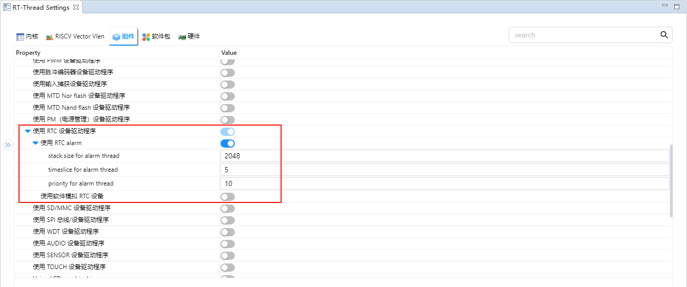
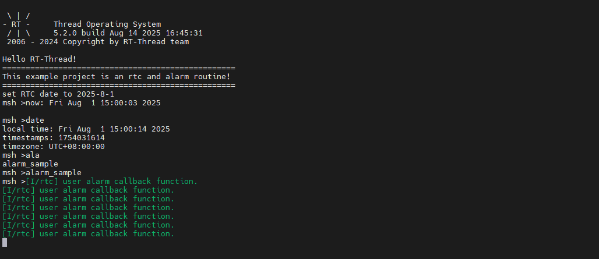
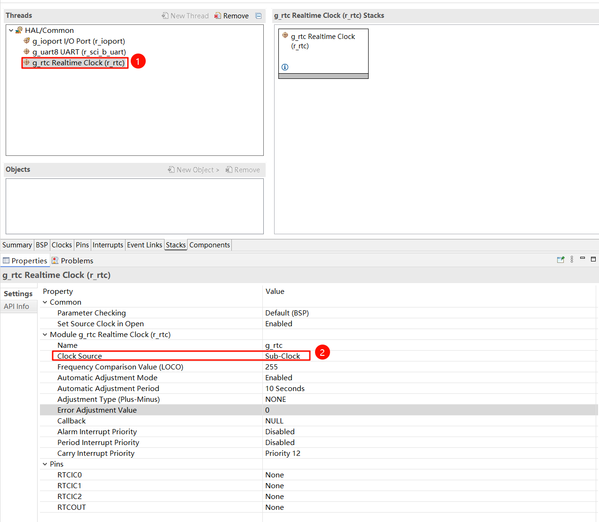
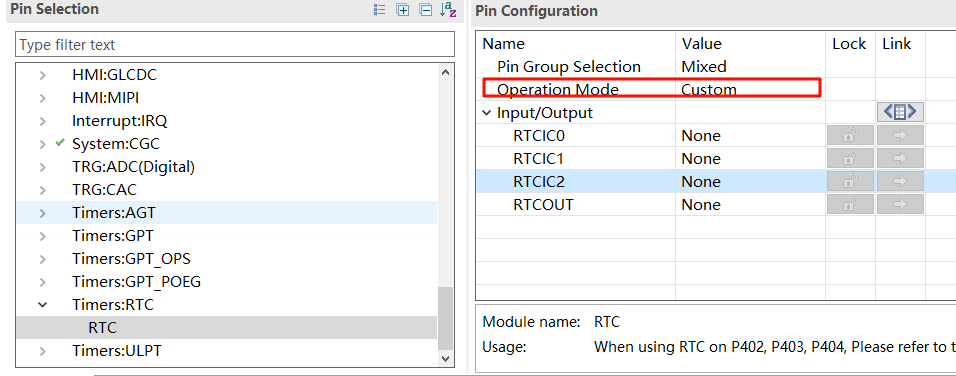

RTC 及 alarm 使用例程说明
中文|English
简介
本例程主要介绍了如何在 Titan Board 上使用 RA8 系列 MCU 的 RTC 模块，结合 RT-Thread RTC 驱动框架，实现基本的实时时钟功能及闹钟功能。RTC 可以提供精确的实时时间，它可以用于产生年、月、日、时、分、秒等信息。目前实时时钟芯片大多采用精度较高的晶体振荡器作为时钟源。有些时钟芯片为了在主电源掉电时还可以工作，会外加电池供电，使时间信息一直保持有效。
RT-Thread 的 RTC 设备为操作系统的时间系统提供了基础服务。面对越来越多的 IoT 场景，RTC 已经成为产品的标配，甚至在诸如 SSL 的安全传输过程中，RTC 已经成为不可或缺的部分。
RTC（实时时钟）简介
1. 概述
RTC（Real-Time Clock） 是一种用于 计量和跟踪实际时间（年、月、日、时、分、秒） 的电子模块或芯片。它通常内置在 微控制器（MCU） 或作为独立芯片存在，用于提供 系统时间、定时唤醒、定时事件触发 等功能。
RTC 的核心特点是 低功耗、长时间稳定运行，即使系统主电源断电，也可通过备用电源（如电池或超级电容）继续计时。
2. 工作原理
RTC 基本上是一个 低功耗振荡器 + 计数器 系统：
时钟源
RTC 通常使用 32.768 kHz 石英晶振（1 Hz = 2^15 周期）
提供稳定时基
分频计数
将晶振信号分频得到 1 Hz 的秒脉冲
累计计数生成分钟、小时、天、月、年
寄存器存储
RTC 内部寄存器保存当前时间、日期、闹钟设置等
电源冗余
内部电池或超级电容供电，使 RTC 在主电源断电时继续运行
3. RTC 类型
内部 RTC
集成在 MCU 内部
优点：节省芯片数量，成本低
缺点：晶振精度受 PCB 布线、温度影响
外部 RTC 芯片
独立芯片，如 DS3231、PCF8563
优点：高精度、可用 I²C/SPI 接口连接 MCU
缺点：增加 PCB 封装面积和成本
4. 关键参数
参数 |
描述 |
|---|---|
振荡器频率 |
通常 32.768 kHz，低功耗稳定 |
时间精度 |
ppm / 秒/天，决定时钟漂移 |
电源电压 |
1.8~5V，支持备用电源 |
功耗 |
1~5 µA（低功耗模式） |
接口类型 |
I²C、SPI 或 MCU 内部总线 |
功能扩展 |
闹钟输出、方波输出、温度补偿、定时唤醒 |
5. RTC 功能
实时时钟
提供当前时间和日期
闹钟功能（Alarm）
可设置指定时间触发中断或唤醒 MCU
定时唤醒（Wake-up Timer）
MCU 进入低功耗模式时，可由 RTC 定时唤醒
温度补偿（部分高精度芯片，如 DS3231）
自动校正晶振频率，减少漂移
方波输出（Square Wave Output）
提供固定频率脉冲，用于驱动 MCU 定时器或其他模块
6. RTC 应用场景
嵌入式设备
MCU 实时时间追踪，事件记录
低功耗物联网设备
RTC 唤醒 MCU 进行周期性数据采集
手表与智能穿戴设备
提供精准计时功能
数据记录仪与工业控制
时间戳、日志记录
汽车电子
行车记录仪、车载娱乐系统计时
RA8 系列 RTC 模块概述
RA8 系列 MCU 内置高度灵活的 实时时钟（RTC） 外设，适用于低功耗、高精度的嵌入式时间管理应用。
1. 总体特性
时间管理：支持秒、分、时、日、月、年及星期。
时钟源：
外部低速晶振（通常为 32.768 kHz），高精度。
内部低速 RC 振荡器，低功耗，精度稍低。
闹钟功能：支持单次和重复闹钟，可生成中断。
定时器：子秒定时器、周期性唤醒定时器。
防篡改检测（可选）：可在配置的引脚检测外部篡改事件。
低功耗操作：RTC 可在待机或睡眠模式下运行，确保 MCU 断电时仍保持时间。
2. RTC 模块架构
RA8 RTC 模块包含以下功能模块：
时间计数器（Calendar Counter）
维护当前时间和日期。
支持 24 小时或 12 小时制。
自动处理闰年调整。
闹钟与比较单元
将当前时间与预设闹钟值比较。
匹配时生成中断。
支持重复闹钟（每日、每小时等）。
时钟源与分频器
将外部 32.768 kHz 或内部 RC 振荡器分频生成 1 Hz 时基。
可选择时钟精度与功耗的平衡。
中断控制器
支持闹钟中断、周期中断、溢出中断。
可配置中断屏蔽、使能及状态标志。
防篡改及备份寄存器（可选）
非易失性备份寄存器，可存储断电保留数据。
防篡改引脚可触发中断，实现安全应用。
3. 关键特性
特性 |
描述 |
|---|---|
时间分辨率 |
秒级，可选子秒计数 |
时间范围 |
年、月、日、时、分、秒 |
闹钟 |
可配置闹钟并触发中断 |
时钟源 |
外部 32.768 kHz 晶振，内部低速 RC 振荡器 |
功耗 |
超低功耗，支持待机/睡眠模式 |
中断 |
闹钟、周期性、溢出 |
备份寄存器 |
非易失性寄存器，可在断电期间保存数据 |
防篡改检测（可选） |
外部引脚事件可触发中断 |
4. 工作原理
选择时钟源：外部晶振或内部 RC 振荡器。
设置时间：将初始时间和日期写入日历计数器。
设置闹钟：配置闹钟时间并使能闹钟中断。
中断处理：MCU 可通过 RTC 中断标志响应闹钟或周期性事件。
电源管理：RTC 在低功耗模式下继续计时，确保时间准确。
RT-Thread RTC 驱动框架
RT-Thread 提供统一的 RTC 驱动框架，抽象底层硬件接口，提供标准化 API 以支持时间管理和闹钟功能。
1. 主要接口
函数 / 宏 |
功能 |
|---|---|
|
获取 RTC 设备句柄 |
|
打开 RTC 设备并初始化硬件 |
|
配置 RTC：设置/获取时间，设置闹钟等 |
|
读取当前时间或闹钟状态 |
|
写入时间或闹钟值 |
|
关闭 RTC 设备 |
2. rt_device_control 常用命令
命令 |
描述 |
|---|---|
|
设置当前 RTC 时间 |
|
获取当前 RTC 时间 |
|
设置闹钟时间并使能闹钟中断 |
|
获取已配置的闹钟时间 |
|
使能 RTC |
|
禁用 RTC |
3. 闹钟处理
通过
RT_DEVICE_CTRL_RTC_SET_ALARM配置闹钟。使能中断，当闹钟触发时 MCU 收到通知。
中断服务例程可更新标志、触发事件或唤醒低功耗 MCU。
硬件说明
本例程使用的RTC 设备依赖于LOCO 时钟，此外无需过多连接。
FSP 配置
打开 FSP，选择对应的工程文件下的 configuration.xml，新增 RTC Stack;

下面进行 RTC 参数的配置，设置 rtc stack name 为 g_rtc，设置 RTC 中断回调函数为 rtc_callback，并配置中断回调优先级；

RT-Thread Settings 配置
打开 RT-Thread Settings，找到硬件选项，使能 RTC；

接下来我们配置 RTC，首先需要使能 RT-Thread 的 RTC 设备框架，同时使能 alarm 功能；

示例代码说明
本例程的源码位于/src/hal_entry.c。
rt_err_t ret = RT_EOK;
time_t now;
rt_device_t device = RT_NULL;
device = rt_device_find(RTC_NAME);
if (!device)
{
rt_kprintf("find %s failed!\n", RTC_NAME);
}
if(rt_device_open(device, 0) != RT_EOK)
{
rt_kprintf("open %s failed!\n", RTC_NAME);
}
/* 设置日期 */
ret = set_date(2025, 8, 1);
rt_kprintf("set RTC date to 2025-8-1\n");
if (ret != RT_EOK)
{
rt_kprintf("set RTC date failed\n");
}
/* 设置时间 */
ret = set_time(15, 00, 00);
if (ret != RT_EOK)
{
rt_kprintf("set RTC time failed\n");
}
/* 延时3秒 */
rt_thread_mdelay(3000);
/* 获取时间 */
get_timestamp(&now);
rt_kprintf("now: %.*s", 25, ctime(&now));
下面代码可创建一个 RTC 闹钟，然后设置 1 秒后唤醒，最后把该函数导入 msh 命令行中。
void user_alarm_callback(rt_alarm_t alarm, time_t timestamp)
{
LOG_I("user alarm callback function.");
}
void alarm_sample(void)
{
rt_device_t dev = rt_device_find("rtc");
struct rt_alarm_setup setup;
struct rt_alarm * alarm = RT_NULL;
static time_t now;
struct tm p_tm;
if (alarm != RT_NULL)
return;
/* 获取当前时间戳，并把下一秒时间设置为闹钟时间 */
now = get_timestamp(NULL) + 1;
gmtime_r(&now,&p_tm);
setup.flag = RT_ALARM_SECOND;
setup.wktime.tm_year = p_tm.tm_year;
setup.wktime.tm_mon = p_tm.tm_mon;
setup.wktime.tm_mday = p_tm.tm_mday;
setup.wktime.tm_wday = p_tm.tm_wday;
setup.wktime.tm_hour = p_tm.tm_hour;
setup.wktime.tm_min = p_tm.tm_min;
setup.wktime.tm_sec = p_tm.tm_sec;
alarm = rt_alarm_create(user_alarm_callback, &setup);
if(RT_NULL != alarm)
{
rt_alarm_start(alarm);
}
}
/* export msh cmd */
MSH_CMD_EXPORT(alarm_sample,alarm sample);
编译&下载
RT-Thread Studio：在 RT-Thread Studio 的包管理器中下载 Titan Board 资源包，然后创建新工程，执行编译。
编译完成后，将开发板的 USB-DBG 接口与 PC 机连接，然后将固件下载至开发板。
运行效果
按下复位按键重启开发板，输入 alarm_sample 命令运行闹钟示例，可以看到板子上会打印如下信息：

拓展：RTC 掉电运行
当板卡主电源断开后，如需让 RTC 掉电继续运行，需要通过 VBAT 引脚接上外部供电，需要注意的是，当 VBAT 给 RTC 供电时，只会继续 Calendar 计数器的计时，其他 RTC 的功能无法使用，下面是一个参考代码：
ps: rtc 如果打算掉电运行，那么应该确保 rtc_init 只初始化一次，后续可通过 rtc_get 获取时间
#define RTC_YEAR_SET 2025
#define RTC_MON_SET 8
#define RTC_MDAY_SET 5
#define RTC_WDAY_SET (RTC_YEAR_SET-2000 \
+ ((RTC_YEAR_SET-2000)/4) \
- 35 + (26*(RTC_MON_SET+1))/10 \
+ RTC_MDAY_SET -1 )%7
#define RTC_HOUR_SET 12
#define RTC_SEC_SET 0
#define RTC_MIN_SET 0
void rtc_get()
{
rtc_time_t get_time;
R_RTC_CalendarTimeGet(g_rtc.p_ctrl, &get_time);
rt_kprintf ("%d-%d-%d-%d:%d:%d\r\n", get_time.tm_year + 1900, get_time.tm_mon + 1, get_time.tm_mday,
get_time.tm_hour, get_time.tm_min, get_time.tm_sec);
}
MSH_CMD_EXPORT(rtc_get, rtc_get);
void rtc_init(void)
{
rtc_time_t set_time =
{
.tm_min = RTC_MIN_SET,
.tm_hour = RTC_HOUR_SET,
.tm_mday = RTC_MDAY_SET,
.tm_wday = RTC_WDAY_SET,
.tm_mon = RTC_MON_SET - 1,
.tm_year = RTC_YEAR_SET-1900,
};
R_RTC_Open (g_rtc.p_ctrl, g_rtc.p_cfg);
R_RTC_CalendarTimeSet (g_rtc.p_ctrl, &set_time);
}
MSH_CMD_EXPORT(rtc_init, rtc_init);
FSP配置：

